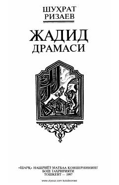

JDO'zbek jadidchilik harakati va milliy dramaturgiya tarixiga bag'ishlangan ilmiy-tarixiy tadqiqot.
Ushbu kitob o'zbek jadidchilik harakati va uning dramaturgiyadagi o'rnini tadqiq etadi. Muallif jadid ziyolilarining ma'rifatparvarlik g'oyalari va ularning milliy teatr san'atini shakllantirishdagi tarixiy xizmatlarini tahlil qiladi.